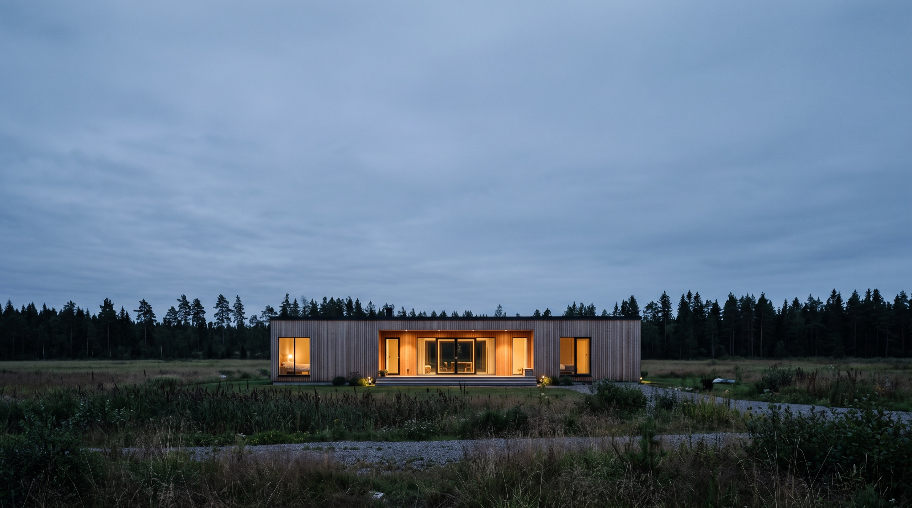

Dos formas de hacerlo
Elige la tuya y entra: dentro tienes medidas, plazos, precio y las preguntas que nos hacen siempre.
El aislamiento no se pega por fuera: vive dentro del muro, en los 240 mm que hay entre montante y montante.
La forma de construir
Casi todo se corta antes de llegar a obra. Cuando la estructura está montada, la casa se cierra en días y ya no depende del tiempo. Menos improvisación, menos retrasos y menos sobrecostes.
Ahorro energético
En un muro de ladrillo el aislamiento se añade por encima y roba metros al salón. En el entramado ligero va dentro. Es la misma pared, pero aislando el triple.
Transmitancia del muro · W/m²K · menos es mejor
La transmitancia mide el calor que se escapa por cada metro cuadrado de pared. Cuanto más baja, menos calefacción hace falta para la misma temperatura dentro. El límite del CTE para la zona climática B es el mínimo legal, no un objetivo.
Casas D-Madera en cifras
Por qué madera
El aislamiento frena el calor en las dos direcciones. Con los huecos bien protegidos del sol, la casa cruza la ola de calor sin tener el aire puesto todo el día.
Casi todo se corta antes de llegar a obra. Menos improvisación, menos retrasos y menos sobrecostes.
Está atornillada y clavada, no fundida en un bloque. Al final de su vida la estructura se separa y la madera se reutiliza o se recicla, en lugar de acabar en un contenedor de escombro.
Añadir una habitación más adelante es abrir un paño y seguir la retícula. No hay que romper media casa.
Presupuesto orientativo
Elige el tipo de casa y mueve los metros. El rango sale de los precios por metro cuadrado con los que trabaja Casas D-Madera. El precio cerrado se firma después de ver la parcela.
Tipo de casa
Superficie construida90 m²
20 m²250 m²
Nivel de acabado
Presupuesto estimado
—
Por m²
—
Plazo
—
Sin IVA, terreno, cimentación ni acometidas. El plazo cuenta desde la firma del proyecto hasta la entrega. Si tu parcela no admite la casa, te lo decimos antes de cobrar nada.
Pedir presupuesto cerradoProyectos
Preguntas
La normativa varía en cada comunidad autónoma y en cada municipio, y cambia con el tiempo. Esto es información general, no asesoramiento jurídico: siempre revisamos tu caso concreto.
¿Se puede en tu parcela?
Dinos dónde está y te decimos si se puede.
Municipio, tipo de suelo si lo sabes y un teléfono. Miramos el planeamiento y te llamamos con la respuesta en 24 h laborables. Sin compromiso.